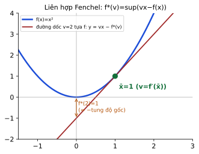

Ý tưởng trung tâm của tối ưu hiện đại: mỗi bài toán có một “bóng” là bài toán đối ngẫu. Module này đi theo slide của cô Dương Thị Kim Huyền: định lý minimax và điểm yên ngựa, đối ngẫu Lagrange (yếu/mạnh), ví dụ SVM, rồi dựng trực tiếp đối ngẫu cho quy hoạch tuyến tính (dạng chuẩn tắc, chính tắc, tổng quát), định lý độ lệch bù và liên hợp Fenchel.
Hàm đối ngẫu lõm, luôn nằm dưới p* (bài min x², x ≤ 1)

Liên hợp Fenchel của x²
9 khái niệm, mệnh đề và phép toán của module. Mỗi thẻ có lời nói nôm na luôn hiện sẵn; bấm “Chi tiết” để xem định nghĩa chính xác, bảng, phép tính từng bước và ví dụ ở nhiều lĩnh vực (số liệu ví dụ ngoài toán đều là minh hoạ). Ví dụ có tính toán đã kiểm bằng script.
Mệnh đề · minimax inequality
Bất đẳng thức minimax
🗣️ Nói nôm na: Trong một ván chơi hai người, người đi sau luôn có lợi thế hơn hoặc bằng người đi trước. “Max của min” (X đi trước) không bao giờ vượt “min của max” (Y đi trước).
Ví dụ đời thường:
Hai người chơi nối tiếp: người đi sau luôn thấy rõ nước đi của người trước nên không bao giờ tệ hơn.
Chọn giá trước hay sau đối thủ: đặt sau biết giá đối thủ nên lợi thế hơn hoặc bằng.
Chi tiết: định nghĩa, giải thích sâu, bảng, phép tính, ví dụ
Định nghĩa / phát biểu chính xác
\(\sup_{x\in C}\inf_{y\in D}f(x,y)\le\inf_{y\in D}\sup_{x\in C}f(x,y)\) với mọi \(f:C\times D\to[-\infty,\infty]\). Nếu có điểm yên ngựa \((x_0,y_0)\) thì dấu bằng xảy ra.
🔍 Bấm để xem giải thích sâu hơn về phát biểu này
“Đi trước” nghĩa là bạn phải cam kết một lựa chọn trong khi đối phương biết nó; “đi sau” nghĩa là bạn tối ưu theo lựa chọn đã biết. Vì vậy \(\sup_x\inf_y\) (X cam kết trước) \(\le\inf_y\sup_x\) (Y cam kết trước). Dấu bằng nghĩa là thứ tự không còn quan trọng — chính là điểm yên ngựa.
Vì sao đúng (ý tưởng chứng minh)
\(\inf_yf(a,y)\le f(a,b)\le\sup_xf(x,b)\) với mọi \(a,b\); lấy sup theo \(a\) rồi inf theo \(b\).
Bạn chọn nước đi trước rồi đối thủ phản ứng: bạn chỉ chắc chắn được “kết quả tệ nhất trong các phản ứng”; nếu đối thủ đi trước thì ngược lại.
Kinh tế (minh hoạ)
Công ty đặt giá trước hay sau đối thủ: người đặt sau luôn đạt lợi nhuận ≥ người đặt trước nếu mọi thứ khác như nhau.
Khái niệm · saddle point
Điểm yên ngựa của hàm Lagrange
🗣️ Nói nôm na: Điểm “yên ngựa” là chỗ vừa là đáy theo hướng này, vừa là đỉnh theo hướng kia: bạn (người chọn x) muốn xuống thấp, đối thủ (chọn λ) muốn lên cao, và không ai muốn đổi nước đi.
Ví dụ đời thường:
Yên ngựa cưỡi: đi dọc lưng ngựa thì lên cao nhất ở giữa, đi ngang theo bụng thì thấp nhất ở giữa.
Hai người cầm hai đầu dây co giãn: một bên kéo, một bên thả; cân bằng khi không bên nào muốn thay đổi.
Chi tiết: định nghĩa, giải thích sâu, bảng, phép tính, ví dụ
Định nghĩa / phát biểu chính xác
\((\bar x,\bar\lambda)\) là điểm yên ngựa của \(L\) nếu \(L(\bar x,\lambda)\le L(\bar x,\bar\lambda)\le L(x,\bar\lambda)\) với mọi \(x\in\Theta,\lambda\ge0\). Khi đó \(\bar x\) tối ưu gốc, \(\bar\lambda\) tối ưu đối ngẫu và \(p=d\).
🔍 Bấm để xem giải thích sâu hơn về phát biểu này
Điều kiện \(L(\bar x,\lambda)\le L(\bar x,\bar\lambda)\le L(x,\bar\lambda)\) thực chất gồm hai mệnh đề: (a) \(\bar x\) cực tiểu hoá \(L(\cdot,\bar\lambda)\); (b) \(\bar\lambda\) cực đại hoá \(L(\bar x,\cdot)\) trên \(\lambda\ge0\) — mệnh đề (b) chính là khả thi (\(g\le0\)) cộng điều kiện bù. Vì thế “điểm yên ngựa = KKT (bài lồi) = nghiệm gốc + nghiệm đối ngẫu + không khoảng cách”.
Bảng / công thức tóm tắt
Bài
Điểm yên ngựa
Giá trị
\(\min x^2,\ x\le1\)
\((0,0)\)
0
\(\min x^2+y^2,\ x+y\ge2\)
\((1,1;\lambda=2)\)
2
Phép tính từng bước
\(L=x^2+\lambda(x-1)\): \(L(x,0)=x^2\ge0=L(0,0)\) ✔ (min theo x); \(L(0,\lambda)=-\lambda\le0=L(0,0)\) ✔ (max theo λ≥0).
Ví dụ ở nhiều lĩnh vực
Lĩnh vực
Ví dụ
Thương lượng (minh hoạ)
Bên mua chọn số lượng, bên bán chọn giá phạt; thoả thuận “cân bằng” là điểm không bên nào muốn đơn phương thay đổi.
Kỹ thuật (minh hoạ)
Cân bằng lực: vật nằm yên khi thế năng cực tiểu theo vị trí và phản lực cực đại theo ràng buộc.
Khái niệm · Lagrange dual function
Hàm đối ngẫu Lagrange
🗣️ Nói nôm na: Mỗi bảng giá phạt \(\lambda\) cho một chặn dưới của chi phí thật: “dù bạn khéo thế nào, chi phí không thể thấp hơn mức này”. Hàm đối ngẫu cho biết chặn dưới tốt nhất ứng với mỗi bảng giá.
Ví dụ đời thường:
Thuê một người kiểm toán đặt giá phạt cho từng điều kiện: giá nào cũng cho bạn một chặn dưới về chi phí.
Thang điểm “chặn dưới”: mỗi giám khảo cho một mức điểm tối thiểu bạn chắc chắn đạt; điểm cao nhất trong các mức đó là chặn tốt nhất.
Chi tiết: định nghĩa, giải thích sâu, bảng, phép tính, ví dụ
\(\hat L(\lambda)\) là giá trị nhỏ nhất của bài “có phạt”; vì phạt chỉ làm bài dễ hơn (khi khả thi), \(\hat L\le p\). Bài toán tìm chặn tốt nhất \(\max\hat L\) luôn lồi (cực đại hàm lõm), nên dù bài gốc khó, bài đối ngẫu vẫn dễ — nhưng nó có thể cho chặn không chặt khi bài gốc không lồi (khoảng cách đối ngẫu).
Vì sao đúng (ý tưởng chứng minh)
\(\hat L\) là infimum của các hàm affine theo \(\lambda\) nên lõm; và với \(x\) khả thi: \(\hat L\le L(x,\lambda)\le f(x)\).
Bảng / công thức tóm tắt
Bài gốc
\(\hat L(\lambda)\)
\(\min x^2,\ x\le1\)
\(-\tfrac14\lambda^2-\lambda\)
\(\min x_1^2+x_2^2,\ x_1+x_2\ge2\)
\(2\lambda-\tfrac12\lambda^2\)
LP \(\min c^\top x,\ Ax=b,\ x\ge0\)
\(b^\top\mu\) nếu \(A^\top\mu\le c\), \(-\infty\) nếu không
Khi mỗi đơn vị vượt ngân sách bị phạt λ đồng, tổng chi phí thấp nhất bạn có thể đạt được là một chặn dưới của chi phí khi ngân sách được giữ nghiêm ngặt.
Vận tải (minh hoạ)
Phạt mỗi tấn hàng giao thiếu: chi phí tối ưu có phạt không vượt chi phí tối ưu có ràng buộc cứng.
Mệnh đề · weak duality
Đối ngẫu yếu và đối ngẫu mạnh
🗣️ Nói nôm na: Yếu: chặn dưới không bao giờ vượt quá chi phí thật. Mạnh: chặn dưới tốt nhất chạm chi phí thật — không còn khe hở.
Ví dụ đời thường:
Giá niêm yết của người bán không bao giờ thấp hơn giá nhập tối thiểu (yếu); hai giá bằng nhau là thị trường hiệu quả (mạnh).
Cận dưới của bạn luôn ≤ giá trị thật; khi chúng bằng nhau không còn khe hở.
Chi tiết: định nghĩa, giải thích sâu, bảng, phép tính, ví dụ
Định nghĩa / phát biểu chính xác
Yếu: \(d\le p\) (luôn đúng). Mạnh: \(p=d\) — đúng khi KKT thoả tại \((\bar x,\bar\lambda)\), hoặc với bài lồi có Slater, hoặc với LP khả thi và hữu hạn.
🔍 Bấm để xem giải thích sâu hơn về phát biểu này
Đối ngẫu yếu là hệ quả thuần tuý của thứ tự min/max nên không cần giả thiết. Đối ngẫu mạnh cần “không có khe hở” giữa hai bài; KKT cung cấp chứng cứ trực tiếp vì cho một điểm yên ngựa. Với LP, tính chất đa diện bảo đảm không bao giờ có khe hở khi giá trị hữu hạn.
Giá bán thấp nhất mà nhà sản xuất chấp nhận (gốc) bằng giá thuê cao nhất nhà đầu tư trả (đối ngẫu): thị trường cân bằng.
Kỹ thuật (minh hoạ)
Chứng nhận tối ưu: khi cận dưới bằng giá trị đang có thì không cần tìm thêm.
Phép toán · LP duality
Lập đối ngẫu LP bằng bảng quy tắc dấu
🗣️ Nói nôm na: Mỗi “điều kiện” của bài gốc trở thành một “giá” của bài đối ngẫu; mỗi “biến” của bài gốc trở thành một “điều kiện” của bài đối ngẫu. Dấu ≥, =, ≤ quyết định dấu của giá.
Ví dụ đời thường:
Chủ xưởng muốn chi phí nhỏ nhất, người định giá muốn doanh thu lớn nhất; hai bên gặp nhau tại một con số.
Bảng quy đổi như đổi sang tiền tệ khác: ≥ ↔ ≥0, = ↔ tự do, ≤ ↔ ≤0.
Chi tiết: định nghĩa, giải thích sâu, bảng, phép tính, ví dụ
Định nghĩa / phát biểu chính xác
Gốc min: hàng “≥” ↔ \(y\ge0\); “=” ↔ tự do; “≤” ↔ \(y\le0\). Cột \(x\ge0\) ↔ \(A^\top y\le c\); tự do ↔ “=”; \(x\le0\) ↔ “≥”. Mục tiêu đối ngẫu \(\max b^\top y\).
🔍 Bấm để xem giải thích sâu hơn về phát biểu này
Quy tắc dấu được suy ra từ hàm Lagrange: nhân tử của “≥” phải \(\ge0\) để tạo cận dưới; của “=” tự do; của “≤” phải \(\le0\). Mỗi biến gốc sinh một ràng buộc đối ngẫu từ yêu cầu “hệ số của biến trong \(L\) không làm \(\inf\) bằng \(-\infty\)”: tự do ⇒ hệ số 0; \(x\ge0\) ⇒ hệ số \(\ge0\); \(x\le0\) ⇒ hệ số \(\le0\).
Bảng / công thức tóm tắt
Gốc (min)
Đối ngẫu (max)
hàng “≥”
\(y_i\ge0\)
hàng “=”
\(y_i\) tự do
hàng “≤”
\(y_i\le0\)
\(x_j\ge0\)
\(\sum a_{ij}y_i\le c_j\)
\(x_j\) tự do
\(\sum a_{ij}y_i=c_j\)
\(x_j\le0\)
\(\sum a_{ij}y_i\ge c_j\)
Phép tính từng bước
\(\min5x_1+4x_2\) s.t. \(x_1+2x_2\ge6,\ 3x_1+x_2\ge8,\ x\ge0\): hai hàng “≥” ⇒ \(y\ge0\); hai cột \(x\ge0\) ⇒ hai ràng buộc “≤”: \(y_1+3y_2\le5\), \(2y_1+y_2\le4\); \(\max6y_1+8y_2\). Giá trị \(18=18\).
Ví dụ ở nhiều lĩnh vực
Lĩnh vực
Ví dụ
Khẩu phần (minh hoạ)
Chi phí thức ăn tối thiểu ↔ doanh thu tối đa của người bán chất dinh dưỡng.
Sản xuất (minh hoạ)
Lợi nhuận tối đa ↔ giá tối thiểu của toàn bộ nguồn lực.
Hay nhầm
Quên chuyển vị \(A\): hàng của gốc ↔ biến đối ngẫu; cột của gốc ↔ ràng buộc đối ngẫu.
Nhầm chiều dấu khi gốc là max (đảo lại bảng).
Mệnh đề · complementary slackness
Độ lệch bù (complementary slackness)
🗣️ Nói nôm na: Hai bên không thể cùng “dư”: nếu ràng buộc gốc còn dư thì giá của nó bằng 0; nếu giá của nó dương thì ràng buộc phải dùng hết. Cũng đúng từ phía biến.
Ví dụ đời thường:
Thùng hàng còn trống chỗ thì không cần trả phụ phí kho; phụ phí dương nghĩa là kho đã chật.
Nếu bạn sản xuất một mặt hàng thì giá trị nguyên liệu dùng cho nó đúng bằng lợi nhuận của nó.
Chi tiết: định nghĩa, giải thích sâu, bảng, phép tính, ví dụ
Độ lệch bù là “nửa còn lại” của đối ngẫu mạnh: giá trị bằng nhau ⇔ từng cặp (biến, ràng buộc đối ngẫu) và (ràng buộc, biến đối ngẫu) bù nhau. Thực hành: đoán tập biến dương → suy ra tập ràng buộc đối ngẫu chặt → giải hệ cho \(y\) → kiểm \(y\) khả thi.
Vì sao đúng (ý tưởng chứng minh)
\(\alpha_i=(a_i^\top x-b_i)y_i\ge0\), \(\beta_j=(c_j-a_j^\top y)x_j\ge0\) và \(\sum\alpha_i+\sum\beta_j=c^\top x-b^\top y\). Bằng 0 ⇔ tối ưu.
Bảng / công thức tóm tắt
Điều kiện
Hệ quả
\(y_i\gt 0\)
ràng buộc gốc i chặt
ràng buộc gốc i lỏng
\(y_i=0\)
\(x_j\gt 0\)
ràng buộc đối ngẫu j chặt
ràng buộc đối ngẫu j lỏng
\(x_j=0\)
Phép tính từng bước
Gốc \(\min5x_1+4x_2\), nghiệm \(x=(2,2)\): cả hai ràng buộc chặt (\(2+4=6\), \(6+2=8\)) — không ép \(y\)=0; \(x_1,x_2\gt 0\) ⇒ hai ràng buộc đối ngẫu chặt: \(y_1+3y_2=5\), \(2y_1+y_2=4\Rightarrow y=(1.4,1.2)\).
Ví dụ ở nhiều lĩnh vực
Lĩnh vực
Ví dụ
Sản xuất (minh hoạ)
Nguyên liệu còn thừa trong kho thì “giá bóng” bằng 0; sản phẩm đang được sản xuất thì giá trị nguyên liệu đã dùng đúng bằng lợi nhuận.
Giao thông (minh hoạ)
Tuyến đường không đầy thì “phí tắc nghẽn” bằng 0.
Mệnh đề · primal dual outcomes
Bốn khả năng của cặp gốc–đối ngẫu
🗣️ Nói nôm na: Hai bài như hai bên cầu: hoặc cùng chạm nhau (tối ưu), hoặc một bên “bay lên trời” thì bên kia không có chỗ đặt chân, hoặc cả hai đều trống.
Ví dụ đời thường:
Một bên trống thì bên kia hoặc cũng trống hoặc “vươn vô tận” — không bao giờ có chuyện một bên hữu hạn mà bên kia trống.
Lợi nhuận tăng vô hạn không thể được “biện minh” bởi bất kỳ bảng giá nào.
Chi tiết: định nghĩa, giải thích sâu, bảng, phép tính, ví dụ
Định nghĩa / phát biểu chính xác
Với LP: (i) cả hai tối ưu, \(f^*=g^*\); (ii) gốc không bị chặn ⇒ đối ngẫu vô nghiệm; (iii) đối ngẫu không bị chặn ⇒ gốc vô nghiệm; (iv) cả hai vô nghiệm. Không có trường hợp “một bài tối ưu hữu hạn, bài kia vô nghiệm”.
🔍 Bấm để xem giải thích sâu hơn về phát biểu này
Nếu gốc không bị chặn dưới, mọi \(y\) đối ngẫu khả thi sẽ cho một cận dưới hữu hạn, mâu thuẫn; nên đối ngẫu không khả thi. Cả hai cùng vô nghiệm là khả dĩ (ví dụ cả hai hệ ràng buộc đều mâu thuẫn). Đây là điểm khác biệt giữa “hữu hạn”, “không bị chặn”, “vô nghiệm”.
Bảng / công thức tóm tắt
Gốc
Đối ngẫu
Ví dụ
tối ưu
tối ưu
\(\min5x_1+4x_2,\dots\)
không bị chặn
vô nghiệm
\(\min-x,\ x\ge0\)
vô nghiệm
không bị chặn
đối ngẫu của dòng trên
vô nghiệm
vô nghiệm
\(x_1+x_2\le-1,\ x\ge0\) và ràng buộc đối ngẫu mâu thuẫn
Phép tính từng bước
\(\min-x\) s.t. \(x\ge0\): gốc không bị chặn (\(x\to\infty\)). Đối ngẫu \(\max0\cdot y\) s.t. \(y\le-1\) (từ \(A^\top y\le c\) với \(A=1\), \(c=-1\), \(y\ge0\)): vô nghiệm ✔.
Ví dụ ở nhiều lĩnh vực
Lĩnh vực
Ví dụ
Kinh tế (minh hoạ)
Lợi nhuận có thể tăng vô hạn thì không tồn tại bảng giá nguồn lực nào “biện minh” được mức lợi nhuận đó.
Kỹ thuật (minh hoạ)
Thiết kế không bị chặn báo hiệu thiếu ràng buộc an toàn: đối ngẫu vô nghiệm cũng là tín hiệu.
Phép toán · SVM dual
Đối ngẫu của SVM
🗣️ Nói nôm na: Thay vì tìm trực tiếp mặt phẳng phân loại, ta tìm “trọng số” của từng điểm dữ liệu; mặt phẳng là tổ hợp có trọng số của các điểm trên lề (vectơ hỗ trợ).
Ví dụ đời thường:
Hàng rào giữa hai làng chỉ cần dựa vào vài ngôi nhà sát ranh giới; các nhà xa không ảnh hưởng.
Bỏ phiếu có trọng số: chỉ những cử tri “sát nút” mới có trọng số dương.
Chi tiết: định nghĩa, giải thích sâu, bảng, phép tính, ví dụ
Định nghĩa / phát biểu chính xác
\(\min\tfrac12\lVert w\rVert^2\) s.t. \(y_i\langle w,x_i\rangle\ge1\) có đối ngẫu \(\max-\tfrac12\lambda^\top Q\lambda+e^\top\lambda\), \(\lambda\ge0\), \(Q_{ij}=y_iy_j\langle x_i,x_j\rangle\); nghiệm gốc \(w=\sum\lambda_iy_ix_i\).
🔍 Bấm để xem giải thích sâu hơn về phát biểu này
Đối ngẫu cho ra biểu diễn \(w=\sum\lambda_iy_ix_i\): w là tổ hợp tuyến tính các điểm dữ liệu. Vì dữ liệu chỉ đi vào qua \(\langle x_i,x_j\rangle\), ta có thể thay tích vô hướng bằng hàm nhân (kernel) để phân loại trong không gian đặc trưng vô hạn chiều mà vẫn chỉ giải QP \(m\) biến.
Phân loại bệnh nhân bằng hai chỉ số: chỉ vài ca “sát ranh” quyết định đường phân chia.
Thư rác (minh hoạ)
Chỉ các thư “khó” (gần ranh giới) có trọng số dương; thư dễ không ảnh hưởng.
Khái niệm · Fenchel conjugate
Liên hợp Fenchel
🗣️ Nói nôm na: Với mỗi độ dốc v, hãy trượt một đường thẳng dốc v từ dưới lên cho đến khi chạm đồ thị; điểm cắt trục tung (đổi dấu) là f*(v). Liên hợp “nhớ” mọi đường tựa của hàm.
Ví dụ đời thường:
Dựng tường tựa vào đồ thị: với mỗi độ nghiêng v, tường cao nhất còn nằm dưới đồ thị cho bạn f*(v).
Đổi cách mô tả đường cong: thay vì “độ cao tại mỗi vị trí” (f), dùng “độ cao gốc của tiếp tuyến theo mỗi độ dốc” (f*).
Chi tiết: định nghĩa, giải thích sâu, bảng, phép tính, ví dụ
\(f^*(v)\ge\langle v,x\rangle-f(x)\) với mọi x chính là Fenchel–Young. Dấu bằng chỉ khi \(x\) làm đạt sup, nghĩa là \(v\) là độ dốc tựa tại x (\(v\in\partial f(x)\)). Với \(f\) lồi chính thường, đóng, \(f^{**}=f\): hai mô tả là tương đương — nền của đối ngẫu Fenchel–Rockafellar.
Bảng / công thức tóm tắt
\(f\)
\(f^*\)
\(x^2\)
\(v^2/4\)
\(\tfrac12x^2\)
\(\tfrac12v^2\)
\(\lVert x\rVert\)
\(0\) nếu \(\lVert v\rVert\le1\), \(+\infty\) nếu ngược lại
\(e^x\)
\(v\ln v-v\ (v\gt 0)\)
Phép tính từng bước
\(f=x^2\): \(\sup_x(vx-x^2)\) tại \(x=v/2\): \(f^*=v^2/2-v^2/4=v^2/4\). Với \(v=2\): \(f^*(2)=1\). Fenchel–Young tại \(x=1\): \(f(1)+f^*(2)=1+1=2=2\cdot1\) ✔ dấu bằng (vì \(2=f^\prime(1)\)).
Ví dụ ở nhiều lĩnh vực
Lĩnh vực
Ví dụ
Giá cả (minh hoạ)
Cặp (lượng, giá): chi phí sản xuất \(f(x)\) và hàm lợi nhuận tối đa theo giá \(v\) là liên hợp của nhau.
Cơ học (minh hoạ)
Năng lượng theo vị trí và theo động lượng (Legendre) là hai mặt của cùng một đối tượng.
Hay nhầm
Liên hợp luôn lồi dù \(f\) không lồi.
Với \(f\) lồi chính thường, đóng: \(f^{**}=f\).
Cần tra cả khoá (4 module)? Dùng ô “Tra cứu” ở góc trên hoặc trang 🔎 Tra cứu toàn khoá.
Bản đồ dạng bài của Module 4
Dạng đề
Nhận biết
Công cụ
Mẫu
A. Lập đối ngẫu LP
“viết bài toán đối ngẫu của …”
bảng quy tắc dấu (tr.54)
Bảng 1
B. Kiểm tra cặp \((x,y)\) có tối ưu
“chứng minh x*, y* tối ưu”
khả thi + độ lệch bù / so giá trị
Bảng 2
C. Tìm nghiệm đối ngẫu từ nghiệm gốc
“biết x*, tìm y*”
độ lệch bù → hệ tuyến tính
Bảng 3
D. Hàm đối ngẫu Lagrange (phi tuyến)
“lập hàm đối ngẫu, tìm d*”
\(\hat L(\lambda)=\inf_xL\)
Bảng 4
E. Gốc/đối ngẫu không bị chặn hoặc vô nghiệm
“xét tính giải được”
4 khả năng (tr.61–62)
Bảng 5
F. Liên hợp Fenchel
“tính \(f^*\)”
\(\sup(vx-f)\), Fenchel–Young
Bảng 6
A. Lập đối ngẫu của một quy hoạch tuyến tính
Nhận biết đề: đề cho “min \(c^\top x\)” với các ràng buộc ≥, =, ≤ và dấu của biến; hỏi bài đối ngẫu.
Nếu đề là max, đổi thành \(\min(-c^\top x)\) (hoặc dùng bảng đảo chiều). Viết rõ \(c,A,b\).
Gắn dấu cho mỗi biến đối ngẫu theo hàng: “≥”→\(y\ge0\); “=”→tự do; “≤”→\(y\le0\).
Mỗi cột của \(A\) cho một ràng buộc đối ngẫu: \(x_j\ge0\)→“≤ \(c_j\)”; tự do→“=”; \(x_j\le0\)→“≥”.
Hàm mục tiêu đối ngẫu: \(\max b^\top y\).
Kiểm số: số biến đối ngẫu = số ràng buộc gốc; số ràng buộc đối ngẫu = số biến gốc.
Nhận biết đề: “lập hàm đối ngẫu”, “giải bài đối ngẫu”, “có đối ngẫu mạnh không”.
Đưa ràng buộc về \(g_i\le0\). Viết \(L=f+\sum\lambda_ig_i\), \(\lambda\ge0\).
Tính \(\hat L(\lambda)=\inf_xL\): đặt \(\nabla_xL=0\) nếu \(L\) lồi theo \(x\); nếu \(L\) tuyến tính theo một biến thì cần hệ số bằng 0, không thì \(\hat L=-\infty\).
Giải \(\max_{\lambda\ge0}\hat L\) (đạo hàm, biên \(\lambda=0\)).
So \(d\) với \(p\) (giải gốc); kiểm KKT tại \((\bar x,\bar\lambda)\).
Phím ← → hoặc nút để chuyển slide; “Toàn màn hình” để trình chiếu. Mỗi slide có khung “📖 Giải thích cho người mới” và ảnh trang slide gốc.
MODULE 4 · MỞ ĐẦU
Bản đồ Module 4: bốn phần của slide
Slide 4 gồm bốn phần, nối với nhau bằng một sợi chỉ: mỗi bài toán “min” có một bài toán “max” cho cận dưới.
Phần
Nội dung
Kết quả then chốt
1
Định lý minimax, điểm yên ngựa
\(\sup\inf\le\inf\sup\)
2
Đối ngẫu Lagrange, KKT, SVM
\(d\le p\); KKT ⇒ \(p=d\)
3
Đối ngẫu LP: dựng trực tiếp, bảng quy tắc, độ lệch bù
\(f(x)\ge g(y)\)
4
Liên hợp Fenchel
\(\langle v,x\rangle\le f(x)+f^*(v)\)
Vì sao học đối ngẫu?
Cho cận dưới của giá trị tối ưu (chứng chỉ).
Nhiều bài toán khó ở dạng gốc lại dễ ở dạng đối ngẫu (SVM, LP lớn).
Nhân tử đối ngẫu là “giá bóng” của ràng buộc.
Nền tảng cho thuật toán gốc–đối ngẫu, điểm trong, ADMM.
Slide gốc, trang 1 — bấm để phóng to📖 Giải thích cho người mới bắt đầu
Hình dung: bạn là người bán hàng cố gắng giảm chi phí (bài gốc). Có một người “kiểm toán” cố gắng chứng minh chi phí không thể thấp hơn một mức nào đó (bài đối ngẫu). Khi hai bên gặp nhau tại một con số, bạn biết mình đã tối ưu — không cần ai khác xác nhận.
MODULE 4 · PHẦN 1/4
01
Định lý minimax và điểm yên ngựa
\(\sup\inf\le\inf\sup\)
Điểm yên ngựa ⇒ dấu bằng
Ví dụ có khoảng cách
MODULE 4 · PHẦN 1
Định lý minimax
Định lý (minimax)Cho \(C,D\) khác rỗng và \(f:C\times D\to[-\infty,\infty]\). Khi đó
Slide gốc, trang 3 — bấm để phóng to📖 Giải thích cho người mới bắt đầu
Cách nhớ bằng trò chơi hai người: người X muốn \(f\) lớn, người Y muốn \(f\) nhỏ. Nếu X đi trước (chọn x rồi Y đáp trả), X chỉ đảm bảo được \(\sup_x\inf_yf\). Nếu Y đi trước, Y chỉ đảm bảo \(\inf_y\sup_xf\). Người đi sau luôn có lợi thế nên \(\sup\inf\le\inf\sup\). Điểm yên ngựa là chỗ ai đi trước cũng không có lợi: không ai muốn đổi nước đi.
MODULE 4 · PHẦN 1
Chứng minh bất đẳng thức minimax (3 dòng)
Lấy \(a\in C,\ b\in D\) bất kỳ. Theo định nghĩa inf và sup: \(\inf_yf(a,y)\le f(a,b)\le\sup_xf(x,b)\).
Vế trái chỉ phụ thuộc \(a\), vế phải chỉ phụ thuộc \(b\). Lấy \(\sup\) theo \(a\) ở vế trái: \(\sup_a\inf_yf(a,y)\le\sup_xf(x,b)\) với mọi \(b\).
Lấy \(\inf\) theo \(b\) ở vế phải: \(\sup_x\inf_yf\le\inf_b\sup_xf\). ∎
(a) từ \(f(x,y_0)\le f(x_0,y_0)\); (b) từ \(f(x_0,y_0)\le f(x_0,y)\) với mọi \(y\). Kết hợp với (1) ⇒ mọi bất đẳng thức là đẳng thức.
📖 Giải thích cho người mới bắt đầu
Chuỗi bất đẳng thức bị “kẹp” hai đầu bằng nhau nên mọi bước giữa đều là dấu bằng: đó là mẹo kinh điển để chứng minh đẳng thức.
MODULE 4 · PHẦN 1
Ví dụ: \(\sup\inf\lt \inf\sup\) (không có điểm yên ngựa)
\(C=D=\{0,1\}\), \(f(x,y)=(x-y)^2\).
\(y=0\)
\(y=1\)
\(\inf_yf\)
\(x=0\)
0
1
0
\(x=1\)
1
0
0
\(\sup_xf\)
1
1
\(\sup_x\inf_yf=\max(0,0)=0\) còn \(\inf_y\sup_xf=\min(1,1)=1\): 0 < 1. Không ô nào vừa là max cột vừa là min hàng ⇒ không có điểm yên ngựa.
📖 Giải thích cho người mới bắt đầu
Đây là trò “oẳn tù tì” rút gọn: ai đi sau cũng thắng (Y chọn \(y=x\) thì \(f=0\); X chọn sau thì chọn \(x\ne y\) được \(f=1\)). Vì vậy thứ tự đi quan trọng và hai vế khác nhau.
Slide gốc, trang 6 — bấm để phóng to📖 Giải thích cho người mới bắt đầu
\(\Theta\) là tập “dễ” (ví dụ cả \(\mathbb R^n\) hoặc một hộp) giữ lại không đưa vào hàm Lagrange. Mỗi \(\lambda\ge0\) là một “bảng giá phạt”: vi phạm \(g_i\gt 0\) bị phạt \(\lambda_ig_i\); \(\hat L(\lambda)\) là chi phí tốt nhất khi được tự do chọn \(x\) dưới bảng giá đó.
Slide gốc, trang 8 — bấm để phóng to📖 Giải thích cho người mới bắt đầu
Điều quan trọng: bài đối ngẫu luôn là bài toán lồi (cực đại hoá hàm lõm trên góc không âm), dù bài gốc khó đến đâu. Đó là lý do đối ngẫu dùng để lấy cận dưới ngay cả cho bài không lồi.
Slide gốc, trang 10 — bấm để phóng to📖 Giải thích cho người mới bắt đầu
Slide yêu cầu “vẽ hình”: hình trên là đường mức của \(L\). Cố định \(\lambda=0\): \(L(x,0)=x^2\) nhỏ nhất tại \(x=0\) ✔. Cố định \(x=0\): \(L(0,\lambda)=-\lambda\) giảm theo \(\lambda\) nên lớn nhất trên \(\lambda\ge0\) tại \(\lambda=0\) ✔ (cực đại ở biên, nên “yên ngựa” hơi lệch về mép).
Slide gốc, trang 15 — bấm để phóng to📖 Giải thích cho người mới bắt đầu
SVM tìm siêu phẳng tách hai lớp với lề lớn nhất: \(\lVert w\rVert\) nhỏ ⇔ lề \(2/\lVert w\rVert\) lớn; các ràng buộc \(y_i\langle w,x_i\rangle\ge1\) buộc mọi điểm nằm đúng phía và ngoài lề. \(H\) là không gian Hilbert (có thể vô hạn chiều — đây là chỗ đối ngẫu có ích: ẩn của bài đối ngẫu chỉ có \(m\) số).
\(Q\) là ma trận Gram có trọng số dấu nên \(Q\succeq0\) ⇒ quy hoạch toàn phương lồi trên miền đa diện \(\lambda\ge0\) (đúng loại bài của Module 3). Dùng solver CVX/CVXPY.
Slide gốc, trang 18 — bấm để phóng to📖 Giải thích cho người mới bắt đầu
Thế \(w=\sum\lambda_iy_ix_i\) vào \(L\): \(\tfrac12\lVert w\rVert^2=\tfrac12\sum\sum\lambda_i\lambda_jy_iy_j\langle x_i,x_j\rangle\) và \(\sum\lambda_i\big(1-y_i\langle w,x_i\rangle\big)=\sum\lambda_i-\sum\sum\lambda_i\lambda_jy_iy_j\langle x_i,x_j\rangle\). Cộng lại ra \(-\tfrac12\sum\sum+\sum\lambda_i\). Dữ liệu chỉ xuất hiện qua tích vô hướng \(\langle x_i,x_j\rangle\) — nền tảng của “kernel trick”.
MODULE 4 · PHẦN 2
Định lý đối ngẫu yếu
Đặt \(\Omega=\{x\in X\mid g_i(x)\le0\ \forall i\}\cap\Theta\), \(p=\inf_{x\in\Omega}f(x)\), \(d=\sup_{\lambda\ge0}\hat L(\lambda)\).
Định lý\(\displaystyle\inf_{x\in\Theta}\sup_{\lambda\ge0}L(x,\lambda)=p\), \(\displaystyle\sup_{\lambda\ge0}\inf_{x\in\Theta}L(x,\lambda)=d\) và \(\boxed{d\le p}\).
Vì sao inf sup L = p?
Với \(x\) khả thi: \(\sup_{\lambda\ge0}L=f(x)\) (chọn \(\lambda=0\), vì \(\lambda_ig_i\le0\)). Với \(x\) không khả thi (\(g_i(x)\gt 0\)): \(\sup_\lambda L=+\infty\) (cho \(\lambda_i\to\infty\)). Nên \(\inf_x\sup_\lambda L=\inf_{x\in\Omega}f=p\). Còn \(d\le p\) chính là bất đẳng thức minimax (1) áp dụng cho \(L\).
Slide gốc, trang 21 — bấm để phóng to📖 Giải thích cho người mới bắt đầu
Đây là cách nhìn quan trọng nhất: bài gốc chính là “min max” còn bài đối ngẫu là “max min” của cùng một hàm L. Mọi tính chất của đối ngẫu là hệ quả của thứ tự lấy min/max.
MODULE 4 · PHẦN 2
Định lý đối ngẫu mạnh (điều kiện KKT)
(i) Giả sử KKT đúng tại \(\bar x\in\Omega\) và \(\bar\lambda\ge0\):
Slide gốc, trang 22 — bấm để phóng to📖 Giải thích cho người mới bắt đầu
Phần (i) nói: tìm được một cặp \((\bar x,\bar\lambda)\) thoả KKT là có ngay chứng chỉ tối ưu (không cần so với điểm nào khác). Chứng minh ý tưởng: KKT cho \(\bar x\) cực tiểu \(L(\cdot,\bar\lambda)\) (bài lồi) nên \(\hat L(\bar\lambda)=L(\bar x,\bar\lambda)=f(\bar x)\) (bù); kết hợp \(d\le p\le f(\bar x)\) ⇒ bằng nhau. \(\partial\) là dưới vi phân (cho hàm lồi không khả vi), \(N(\bar x,\Theta)\) là nón pháp tuyến.
MODULE 4 · PHẦN 2
SVM quay lại: có đối ngẫu mạnh không? Giải hệ KKT
Slide đặt câu hỏi “có xảy ra đối ngẫu mạnh?”. Ràng buộc là affine theo \(w\) và mục tiêu lồi ⇒ KKT là điều kiện đủ; tìm \(\bar w\) bằng cách giải hệ
Slide gốc, trang 25 — bấm để phóng to📖 Giải thích cho người mới bắt đầu
Điều kiện bù \(\lambda_i(1-y_i\langle w,x_i\rangle)=0\) cho biết: chỉ những điểm nằm đúng trên lề (\(y_i\langle w,x_i\rangle=1\)) mới có \(\lambda_i\gt 0\) — chúng gọi là vectơ hỗ trợ.
Slide gốc, trang 28 — bấm để phóng to📖 Giải thích cho người mới bắt đầu
Lỗi chép trên slide (tr.27): dòng “viết lại” ghi \(\min\ \lambda_1^2+\lambda_1\lambda_2+\lambda_2^2-\lambda_1\lambda_2\), tức \(\lambda_1^2+\lambda_2^2\) (mất số hạng \(-\sum\lambda_i\) và đổi dấu tích chéo). Hàm đó cực tiểu tại \(\lambda=0\), cho \(\bar w=0\) — vi phạm ràng buộc. Biểu thức đúng là \(\lambda_1^2+\lambda_2^2-\lambda_1\lambda_2-\lambda_1-\lambda_2\) (cực tiểu tại \((1,1)\)). Kết quả cuối \(\bar w=(-1,1,0)\) của slide (tr.28) đúng, đã kiểm bằng cvxpy.
MODULE 4 · PHẦN 3/4
03
Đối ngẫu cho quy hoạch tuyến tính
Lagrange cho LP, đối ngẫu mạnh
Dựng trực tiếp: dạng chuẩn tắc, chính tắc, tổng quát
Slide gốc, trang 32 — bấm để phóng to📖 Giải thích cho người mới bắt đầu
Mấu chốt: \(\inf_x\) của một hàm tuyến tính theo \(x\) trên toàn \(\mathbb R^n\) chỉ hữu hạn khi hệ số bằng 0 (nếu khác 0, đi theo hướng ngược để được \(-\infty\)). Hệ số \(c-A^\top\mu-\lambda=0\) chính là ràng buộc đối ngẫu \(A^\top\mu\le c\) (do \(\lambda\ge0\)): ràng buộc của bài đối ngẫu sinh ra từ yêu cầu “\(\hat L\gt -\infty\)”.
MODULE 4 · PHẦN 3
Định lý cơ bản của quy hoạch tuyến tính
Định lý (như slide tr.34)“Nếu bài toán (LP) có phương án chấp nhận được thì bài toán có nghiệm.”
Phát biểu này cần sửa
Có phương án chấp nhận được chưa đủ: LP khả thi vẫn có thể không bị chặn (\(p=-\infty\), không có nghiệm). Ví dụ \(\min-x\) s.t. \(x\ge0\). Phát biểu đúng: nếu LP khả thi và giá trị bị chặn dưới thì có nghiệm (đạt tại đỉnh). Chú ý ngay dưới trên slide cũng nhắc “nếu \(p=-\infty\)…”, nên có thể slide chỉ chép thiếu.
Chú ý (slide): nếu LP có phương án chấp nhận được thì có đối ngẫu mạnh; nếu \(p=-\infty\) thì theo đối ngẫu yếu \(d\le p=-\infty\) ⇒ \(d=p=-\infty\) (bài đối ngẫu vô nghiệm, quy ước \(\sup\emptyset=-\infty\)).
Slide gốc, trang 34 — bấm để phóng to📖 Giải thích cho người mới bắt đầu
Ví dụ nằm ngay trong slide: bài ở tr.46 (khả thi nhưng không bị chặn, xem phần Ví dụ) — nên “khả thi ⇒ có nghiệm” sai. Chính xác: hữu hạn + khả thi ⇒ có nghiệm đạt tại đỉnh (Định lý cơ bản thực sự).
Định nghĩa (điểm yên ngựa)\((x^*,y^*)\in\mathbb R^n_+\times\mathbb R^m_+\) là điểm yên ngựa của \(L\) nếu \(L(x^*,y)\le L(x^*,y^*)\le L(x,y^*)\) với mọi \((x,y)\in\mathbb R^n_+\times\mathbb R^m_+\).
Slide gốc, trang 38 — bấm để phóng to📖 Giải thích cho người mới bắt đầu
Chỉ có hai nhóm ràng buộc: \(Ax\ge b\) (nhân tử \(y\)) và \(x\ge0\) (giữ lại trong tập \(\Theta=\mathbb R^n_+\), không đưa vào \(L\)). Hàm \(L\) song tuyến tính (affine theo \(x\) khi cố định \(y\), affine theo \(y\) khi cố định \(x\)) nên yên ngựa rất “sạch”.
MODULE 4 · PHẦN 3
Dựng đối ngẫu: min max → max min
Với \(x\in\mathbb R^n_+\) thoả \(Ax\ge b\): \(b-Ax\le0\) nên \(\max_{y\ge0}L(x,y)=c^\top x\) (chọn \(y=0\)). Nếu \(x\) vi phạm một dòng, \(\max_yL=+\infty\).
Lý do: \(x\ge0\) nên \((c-A^\top y)^\top x\) bị chặn dưới bởi 0 chỉ khi \(c-A^\top y\ge0\) (khi đó min bằng 0 tại \(x=0\)); nếu có thành phần âm, tăng \(x_j\to\infty\) cho \(-\infty\).
Slide gốc, trang 43 — bấm để phóng to📖 Giải thích cho người mới bắt đầu
Khác với tr.32 (x tự do), ở đây \(x\ge0\) nên điều kiện “hệ số = 0” yếu đi thành “hệ số ≥ 0”. Đó là nguồn gốc quy tắc dấu: biến gốc \(\ge0\) ↔ ràng buộc đối ngẫu \(\le\).
Slide gốc, trang 45 — bấm để phóng to📖 Giải thích cho người mới bắt đầu
Cách nhớ bằng ví dụ khẩu phần: gốc = “chi phí thấp nhất để đạt đủ dinh dưỡng \(Ax\ge b\)”; đối ngẫu = “giá cao nhất người bán chất dinh dưỡng có thể đặt \(y\) sao cho mỗi loại thức ăn không đắt hơn giá \(c\) của nó”.
MODULE 4 · PHẦN 3
Ví dụ 1 (tr.46–47): đối ngẫu của LP dạng chuẩn tắc
Tìm đối ngẫu của \(f(x)=-x_1+3x_2-3x_3\to\min\) s.t. \(4x_1+3x_2-3x_3-x_4\ge8\), \(-x_1+x_2+x_3\ge-4\), \(x_1+5x_2-5x_3+x_4\ge6\), \(x_j\ge0\ (j=1..4)\). Ba ràng buộc “≥” ⇒ ba biến \(y_i\ge0\); bốn biến \(x_j\ge0\) ⇒ bốn ràng buộc “≤”.
Cặp bài toán trên khả thi nhưng không bị chặn: gốc có tia \(d=(5,2,3,0)\) làm \(f\) giảm vô hạn (\(Ad=(17,0,0)\ge0\), \(c^\top d=-8\lt 0\)), nên đối ngẫu vô nghiệm (không có \(y\) thoả hệ). Đúng với “gốc không bị chặn ⇒ đối ngẫu không có phương án” ở tr.61. Viết đối ngẫu là thao tác hình thức, kết quả có thể là “vô nghiệm”.
Slide gốc, trang 51 — bấm để phóng to📖 Giải thích cho người mới bắt đầu
Đẳng thức = hai bất đẳng thức ngược chiều, mỗi cái có một nhân tử không âm; hiệu hai nhân tử đó có thể mang dấu bất kỳ. Cũng là lý do \(\mu\) (nhân tử của \(h=0\)) tự do dấu ở các Module trước.
MODULE 4 · PHẦN 3
Ví dụ 2 (tr.52–53): đối ngẫu của LP dạng chính tắc
Cả hai bài có nghiệm và cùng giá trị: \(p=d=-5.875=-\tfrac{47}8\) (primal \(x^*=(0,\,3.125,\,0.875,\,5.25)\), dual \(y^*=(-0.4375,\,0.5,\,-0.4375)\), đã kiểm bằng scipy).
Slide gốc, trang 53 — bấm để phóng to📖 Giải thích cho người mới bắt đầu
Kiểm nhanh: \(b^\top y^*=12(-0.4375)+4(0.5)+6(-0.4375)=-5.25+2-2.625=-5.875\) ✔ bằng \(c^\top x^*=-9.375+3.5=-5.875\) ✔. Cả ba \(y_i\) có dấu khác nhau vì biến tự do.
MODULE 4 · PHẦN 3
Dạng tổng quát: bảng quy tắc dấu
BT gốc (min)
Chỉ số
BT đối ngẫu (max)
\(c^\top x\to\min\)
\(b^\top y\to\max\)
\(\sum_ja_{ij}x_j\ge b_i\)
\(i=1..m_1\)
\(y_i\ge0\)
\(\sum_ja_{ij}x_j=b_i\)
\(i=m_1+1..m_2\)
\(y_i\) tự do
\(\sum_ja_{ij}x_j\le b_i\)
\(i=m_2+1..m\)
\(y_i\le0\)
\(x_j\ge0\)
\(j=1..n_1\)
\(\sum_ia_{ij}y_i\le c_j\)
\(x_j\) tự do
\(j=n_1+1..n_2\)
\(\sum_ia_{ij}y_i=c_j\)
\(x_j\le0\)
\(j=n_2+1..n\)
\(\sum_ia_{ij}y_i\ge c_j\)
Cách nhớ
Với gốc min: dấu ràng buộc gốc “thuận” (\(\ge\)) ↔ biến đối ngẫu \(\ge0\); biến gốc “thuận” (\(x\ge0\)) ↔ ràng buộc đối ngẫu “thuận” theo hướng \(\le\) (vì đối ngẫu là max). Đẳng thức/tự do ↔ tự do/đẳng thức.
Slide gốc, trang 54 — bấm để phóng to📖 Giải thích cho người mới bắt đầu
Bảng này suy ra từ hàm Lagrange: nhân tử của ràng buộc “≥” phải \(\ge0\); của “=” tự do; của “≤” phải \(\le0\) (vì đổi dấu về dạng “≥”). Biến \(x_j\) tự do ⇒ hệ số của \(x_j\) trong \(L\) phải triệt tiêu (đẳng thức); \(x_j\ge0\) ⇒ hệ số \(\ge0\); \(x_j\le0\) ⇒ hệ số \(\le0\).
Đọc kết quả: hàng 1 “≥”→\(y_1\ge0\); hàng 2 “=”→\(y_2\) tự do; hàng 3 “≤”→\(y_3\le0\). Cột \(x_1,x_3\ge0\)→“≤”; cột \(x_2\le0\)→“≥”; cột \(x_4\) tự do→“=”.
Điều slide không nói
Cặp này cũng gốc không bị chặn (tia \(d=(4,-5,0,7)\): \(Ad=(0,0,-20)\) thoả hàng 1 “≥0”, hàng 2 “=0”, hàng 3 “≤0”; \(c^\top d=-5\lt 0\)) ⇒ đối ngẫu vô nghiệm. Slide chỉ yêu cầu “viết đối ngẫu”.
Slide gốc, trang 59 — bấm để phóng to📖 Giải thích cho người mới bắt đầu
Hai ý được dùng: thay \(b=Ax\) (gốc khả thi) và nhân hai vế của \(A^\top y\le c\) với \(x\ge0\) (đối ngẫu khả thi). Mỗi nghiệm đối ngẫu khả thi cho một cận dưới của giá trị gốc; mỗi nghiệm gốc khả thi cho một cận trên của giá trị đối ngẫu.
MODULE 4 · PHẦN 3
Quan hệ gốc–đối ngẫu (2): chứng chỉ tối ưu và các trường hợp
Hệ quảNếu \(x^*\in D_P,\ y^*\in D_Q\) và \(f(x^*)=g(y^*)\) thì cả hai là phương án tối ưu.
Định lý (tr.62): nếu \(x^*\) là phương án tối ưu của gốc thì (Q) có phương án tối ưu \(y^*\) và \(f(x^*)=g(y^*)\); đối xứng nếu \(y^*\) tối ưu của (Q).
Slide gốc, trang 62 — bấm để phóng to📖 Giải thích cho người mới bắt đầu
Bốn khả năng trên là đủ: chỉ có (tối ưu, tối ưu), (không bị chặn, vô nghiệm), (vô nghiệm, không bị chặn) và (vô nghiệm, vô nghiệm). Không bao giờ có “một bài tối ưu hữu hạn, bài kia vô nghiệm” (đó là nội dung của đối ngẫu mạnh).
MODULE 4 · PHẦN 3
Định lý độ lệch bù (Complementary slackness)
Định lýGiả sử \(x^*\in D_P\), \(y^*\in D_Q\). Khi đó \((x^*,y^*)\) là cặp tối ưu khi và chỉ khi
Slide gốc, trang 63 — bấm để phóng to📖 Giải thích cho người mới bắt đầu
Đây là cách kiểm tra tối ưu không cần so sánh giá trị: nếu bạn đoán một cặp \((x,y)\), chỉ cần thử hai nhóm tích bằng 0 (và khả thi). Cũng là cách tìm nghiệm đối ngẫu từ nghiệm gốc: ràng buộc nào lỏng ⇒ \(y_i=0\); biến nào dương ⇒ ràng buộc đối ngẫu chặt, giải hệ phương trình.
MODULE 4 · PHẦN 3
Chứng minh định lý độ lệch bù
Đặt \(\alpha_i=\Big(\sum_ja_{ij}x_j^*-b_i\Big)y_i^*\) và \(\beta_j=\Big(c_j-\sum_ia_{ij}y_i^*\Big)x_j^*\). Vì \(x^*\in D_P,\ y^*\in D_Q\) nên \(\alpha_i\ge0,\ \beta_j\ge0\) (tích của hai số cùng dấu).
Đặt \(\alpha=\sum_i\alpha_i\ge0\), \(\beta=\sum_j\beta_j\ge0\). Điều kiện (8a),(8b) ⇔ \(\alpha=0\) và \(\beta=0\) ⇔ \(\alpha+\beta=0\) (vì cả hai không âm).
Tính tổng: \(\alpha+\beta=\sum_{i,j}a_{ij}x_j^*y_i^*-\sum_ib_iy_i^*+\sum_jc_jx_j^*-\sum_{i,j}a_{ij}y_i^*x_j^*=\sum_jc_jx_j^*-\sum_ib_iy_i^*=f(x^*)-g(y^*)\).
Slide gốc, trang 66 — bấm để phóng to📖 Giải thích cho người mới bắt đầu
Hai tổng \(\alpha\) và \(\beta\) là “độ chênh” giữa \(f(x)\) và \(g(y)\) được chia theo hàng và theo cột: \(f(x)-g(y)=\alpha+\beta\ge0\). Khoảng cách đối ngẫu bằng 0 khi và chỉ khi từng thành phần đều bằng 0.
MODULE 4 · PHẦN 4/4
04
Liên hợp Fenchel
Định nghĩa, tính lồi
Bất đẳng thức Fenchel–Young
Ví dụ: chuẩn
MODULE 4 · PHẦN 4
Liên hợp Fenchel \(f^*\)
Cho \(H\) không gian Hilbert thực, \(f:H\to\bar{\mathbb R}\) hàm chính thường (không đồng nhất \(+\infty\), không nhận \(-\infty\)). Với \(v\in H\):
\(f^*\) là hàm lồi (sup của các hàm affine theo \(v\)). Chọn \(\hat x\in\mathrm{dom}f\): \(f^*(v)\ge\langle v,\hat x\rangle-f(\hat x)\gt -\infty\). Nếu \(f\) nửa liên tục dưới thì \(f^*\) chính thường.
Liên hợp của f(x)=x²: f*(v)=v²/4. Đường dốc v tựa f; −f*(v) là tung độ gốc của đường tựa
Slide gốc, trang 70 — bấm để phóng to📖 Giải thích cho người mới bắt đầu
Hình dung: với mỗi độ dốc \(v\), dịch đường thẳng \(y=vx-t\) lên cao dần tới khi chạm đồ thị \(f\) từ dưới; tung độ gốc khi vừa chạm là \(-f^*(v)\). Liên hợp mã hoá mọi đường tựa của \(f\) — vì vậy \(f^*\) luôn lồi và là công cụ chính của đối ngẫu.
MODULE 4 · PHẦN 4
Bất đẳng thức Fenchel–Young và dưới vi phân
Định lý Fenchel–Young (tr.72)\(\langle v,x\rangle\le f(x)+f^*(v)\) với mọi \(x,v\in H\).
Chứng minh: \(f^*(v)=\sup_{x\in\mathrm{dom}f}\{\langle v,x\rangle-f(x)\}\ge\langle v,x\rangle-f(x)\). Nếu \(f(x)\in\mathbb R\) chuyển vế; nếu \(f(x)=+\infty\) bất đẳng thức hiển nhiên (\(f^*(v)\ne-\infty\)).
Mệnh đề (tr.73)\(f\) lồi chính thường: \(v\in\partial f(\bar x)\iff f(\bar x)+f^*(v)=\langle v,\bar x\rangle\).
Slide gốc, trang 73 — bấm để phóng to📖 Giải thích cho người mới bắt đầu
Dấu bằng trong Fenchel–Young xảy ra đúng khi \(v\) là (dưới) gradient của \(f\) tại \(\bar x\). Với \(f\) khả vi: \(f(x)+f^*(f^\prime(x))=xf^\prime(x)\). Ví dụ \(f=x^2\): \(f^*(v)=v^2/4\), tại \(\bar x=1,v=2\): \(1+1=2\cdot1\) ✔.
Slide cho \(\lVert v\rVert_1=\sup_{\lVert x\rVert_\infty\le1}\langle v,x\rangle\) (định nghĩa chuẩn đối ngẫu) và bỏ lửng phần kết quả (“…”). Hoàn chỉnh:
Lý do: \(\langle v,x\rangle-\lVert x\rVert_1=\sum_j(v_jx_j-|x_j|)\), mỗi số hạng \(\le0\) khi \(|v_j|\le1\) (đạt 0 tại \(x_j=0\)); nếu \(|v_k|\gt 1\) cho \(x_k=t\,\mathrm{sign}(v_k)\to\infty\) được \(+\infty\). Quy luật: liên hợp của chuẩn là hàm chỉ thị của quả cầu đơn vị của chuẩn đối ngẫu.
Slide gốc, trang 77 — bấm để phóng to📖 Giải thích cho người mới bắt đầu
Trong \(\mathbb R^n\): chuẩn đối ngẫu của \(\ell_1\) là \(\ell_\infty\); của \(\ell_2\) là chính nó; của \(\ell_\infty\) là \(\ell_1\). Điều này giải thích vì sao bài “min \(\lVert x\rVert_1\)” (LASSO, nén tín hiệu) có đối ngẫu là bài với ràng buộc hộp \(\lVert v\rVert_\infty\le1\) — rất dễ giải.
Tr.27: hàm mục tiêu đối ngẫu của SVM bị chép thiếu (đáp số \(\bar w\) vẫn đúng).
Tr.34: “LP khả thi ⇒ có nghiệm” cần thêm “và bị chặn”.
Tr.76–77: Ví dụ 2 của Fenchel chưa hoàn chỉnh (đã bổ sung ở trên).
📖 Giải thích cho người mới bắt đầu
Học xong module này bạn cần thao tác được ba việc: (1) lập đối ngẫu bất kỳ LP nào; (2) kiểm tra cặp \((x,y)\) có tối ưu không bằng độ lệch bù; (3) nhận biết trường hợp bài gốc không bị chặn / vô nghiệm qua đối ngẫu.
Ví dụ chi tiết (có lời giải từng bước)
Tự làm trước, rồi mở lời giải. Các số liệu đã kiểm bằng scipy/numpy (xem trang Kiểm chứng).
Ví dụ A — Lập đối ngẫu của \(\min 5x_1+4x_2\) s.t. \(x_1+2x_2\ge6,\ 3x_1+x_2\ge8,\ x\ge0\) và giải cả hai
Bài khẩu phần: hai thức ăn, hai chất dinh dưỡng.
Ba thành phần: \(c=(5,4)\), \(A=\begin{pmatrix}1&2\\3&1\end{pmatrix}\), \(b=(6,8)\). Hai ràng buộc “≥” ⇒ \(y_1,y_2\ge0\); hai biến \(x_j\ge0\) ⇒ hai ràng buộc “≤”.
Đối ngẫu: \(\max\ 6y_1+8y_2\) s.t. \(y_1+3y_2\le5,\ 2y_1+y_2\le4,\ y\ge0\).
Gốc: các đỉnh \((0,8),(6,0),(2,2)\) (giao hai ràng buộc: \(x_1+2x_2=6,\ 3x_1+x_2=8\Rightarrow x=(2,2)\)). Giá trị \(5x_1+4x_2\): \(32,\ 30,\ 18\) ⇒ min \(=18\) tại \((2,2)\).
Đối ngẫu: đỉnh giao \(y_1+3y_2=5,\ 2y_1+y_2=4\Rightarrow y=(1.4,1.2)\); giá trị \(6(1.4)+8(1.2)=18\) ✔ \(=p\).
Độ lệch bù: \(x_1,x_2\gt 0\) ⇒ hai ràng buộc đối ngẫu chặt ✔; \(y_1,y_2\gt 0\) ⇒ hai ràng buộc gốc chặt ✔ (\(2+4=6,\ 6+2=8\)).
Ví dụ B — Dùng độ lệch bù để tìm nghiệm đối ngẫu từ nghiệm gốc
Tìm điểm yên ngựa: \(\partial_xf=-3+4y=0\Rightarrow y_0=\tfrac34\); \(\partial_yf=-2+4x=0\Rightarrow x_0=\tfrac12\).
Giá trị tại \((x_0,y_0)\): \(4-1.5-1.5+1.5=2.5\).
Kiểm yên ngựa: \(f(x,y_0)=4-3x-1.5+3x=2.5\) (hằng số) ✔ \(\le2.5\); \(f(x_0,y)=4-1.5-2y+2y=2.5\) ✔ — nên \(\sup\inf=\inf\sup=2.5\) (giá trị của trò chơi).
🔎 Case study: bài toán khẩu phần (cặp gốc–đối ngẫu)
Một xưởng thức ăn gia súc cần pha hai nguyên liệu để đạt tối thiểu 6 đơn vị chất A và 8 đơn vị chất B. Giá (số liệu giả định minh hoạ): nguyên liệu 1 giá 5/đơn vị (chứa 1 A, 3 B), nguyên liệu 2 giá 4/đơn vị (chứa 2 A, 1 B).
Gốc (xưởng): tối thiểu chi phí
Đối ngẫu (người bán dinh dưỡng): tối đa doanh thu
biến
\(x_j\): lượng nguyên liệu
\(y_i\): giá 1 đơn vị chất \(i\)
mục tiêu
\(\min5x_1+4x_2\)
\(\max6y_1+8y_2\)
ràng buộc
đủ A, B: \(x_1+2x_2\ge6,\ 3x_1+x_2\ge8\)
giá dinh dưỡng trong một nguyên liệu không vượt giá nguyên liệu: \(y_1+3y_2\le5,\ 2y_1+y_2\le4\)
tối ưu
\(x=(2,2)\), chi phí 18
\(y=(1.4,1.2)\), doanh thu 18
Ý nghĩa kinh tế
\(y_1=1.4\): tăng yêu cầu chất A thêm 1 đơn vị làm chi phí tối thiểu tăng khoảng 1.4 — đó là giá bóng của chất A (đúng trong khoảng mà cơ sở tối ưu không đổi). Hai bên “gặp nhau” ở 18: đây là điểm yên ngựa của \(L(x,y)\).
Cảnh báo bẫy diễn giải sai
Những chỗ dễ sai
Đảo chiều min/max: gốc min thì đối ngẫu max (và ngược lại).
Quên chuyển vị \(A\): hàng của \(A\) là ràng buộc gốc, cột của \(A\) là ràng buộc đối ngẫu.
Dấu biến đối ngẫu phụ thuộc dấu ràng buộc gốc (bảng tr.54); sai một dấu là sai cả bài.
“LP khả thi ⇒ có nghiệm” là sai (còn phải bị chặn).
Viết được bài đối ngẫu không có nghĩa là nó có nghiệm: có thể vô nghiệm (khi gốc không bị chặn).
Đối ngẫu yếu \(d\le p\) luôn đúng; đối ngẫu mạnh \(d=p\) cần điều kiện (KKT, Slater, tính chất LP).
Độ lệch bù chỉ áp dụng cho cặp khả thi \((x,y)\); không thể dùng để “chứng minh khả thi”.
Bối cảnh lý thuyết và lịch sử
📜 Bối cảnh
Đối ngẫu LP do John von Neumann (1947) nêu ra khi nghiên cứu lý thuyết trò chơi (định lý minimax 1928); George Dantzig (simplex 1947) và Gale–Kuhn–Tucker (1951) hoàn thiện. Lagrange (1788) cho nhân tử; Fenchel (1949) liên hợp lồi. SVM do Cortes–Vapnik (1995); dạng đối ngẫu làm kernel trick khả thi.
Bazaraa–Sherali–Shetty Ch.6 “Lagrangian duality and saddle point optimality”.
Slide gốc: Slides/4_Duality in Optimization_250531.pdf.
Mỗi bài dưới đây giải trọn vẹn từng bước như một bài tự luận dài (đề → phân tích → từng bước có “vì sao” → bảng đầy đủ → kiểm bằng code → biến thể → bài tự làm).
Cách đọc các bài lớn
Mỗi bài viết đủ bước: dạng chuẩn → lập đối ngẫu → giải hai bài → đối chiếu (so giá trị, độ lệch bù, KKT). Mọi con số do chương trình tính từ đề (scipy), không gõ tay. Hãy tự làm trước 20–30 phút.
LP 2 biến
Bài lớn 4.1 — LP sản xuất: đối ngẫu và giá bóng
Giải gốc, lập–giải đối ngẫu, kiểm bù, giải thích giá bóng và khoảng hiệu lực.
Một xưởng làm hai sản phẩm; lợi nhuận 3 và 2 (triệu đồng/đơn vị). Yêu cầu: (a) giải bài gốc; (b) lập và giải bài đối ngẫu; (c) giải thích ý nghĩa \(y_i\); (d) nếu tăng nguyên liệu từ 5 lên 6 thì lợi nhuận tăng bao nhiêu?
Phần a — giải bài gốc (đỉnh)
1
Liệt kê các đỉnh
Đỉnh
Giao của
Khả thi?
\(3x_1+2x_2\)
\((0,0)\)
\(x_1=x_2=0\)
✔
0
\((2.5,0)\)
\(2x_1+x_2=5,\ x_2=0\)
✔ (\(2.5\le4\))
7.5
\((0,4)\)
\(x_1+x_2=4,\ x_1=0\)
✔ (\(4\le5\))
8
\((1,3)\)
\(x_1+x_2=4,\ 2x_1+x_2=5\)
✔
9
2
Kết luận
Lớn nhất ở \((1,3)\): \(p^*=9\). Cả hai ràng buộc đều chặt tại đó: dùng hết giờ máy và nguyên liệu.
Phần b — lập và giải bài đối ngẫu
1
Áp bảng quy tắc (max)
Bài gốc là max với “≤”: biến đối ngẫu \(y_i\ge0\); mỗi biến \(x_j\ge0\) cho một ràng buộc “≥”:
Đỉnh của miền đối ngẫu: giao \(y_1+2y_2=3\) và \(y_1+y_2=2\) cho \(y=(1,1)\), giá \(4+5=9\). Hai đỉnh trên trục: \((0,2)\)? \(y_1+2y_2=4\ge3\) ✔, \(y_1+y_2=2\ge2\) ✔, giá 10. \((3,0)\)? \(3\ge3\), \(3\ge2\), giá 12. Nhỏ nhất: \(d^*=9\) tại \(y=(1,1)\).
Đối chiếu
\(p^*=d^*=9\): đối ngẫu mạnh. Kiểm bù: cả hai \(y_i\gt 0\) ⇒ cả hai ràng buộc gốc chặt ✔; cả hai \(x_j\gt 0\) ⇒ cả hai ràng buộc đối ngẫu chặt ✔.
Phần c, d — ý nghĩa và độ nhạy
1
Ý nghĩa của \(y\)
\(y_1=1\): thêm một giờ máy làm lợi nhuận tăng 1 triệu; \(y_2=1\): thêm một đơn vị nguyên liệu tăng 1 triệu. Đây là giá bóng (giá tối đa đáng trả cho một đơn vị tài nguyên).
2
Tăng nguyên liệu 5 → 6
Dự đoán theo giá bóng: \(9+y_2\cdot1=10\). Giải lại: giao \(x_1+x_2=4,\ 2x_1+x_2=6\) cho \(x=(2,2)\), lợi nhuận \(6+4=10\) ✔ (khớp dự đoán, vì đỉnh vẫn do cùng hai ràng buộc xác định).
3
Giá bóng chỉ đúng trong một khoảng
\(y\) đúng khi cơ sở (tập ràng buộc chặt) không đổi. Với \(b_2=t\): đỉnh \(x=(t-4,\,8-t)\) cần \(x\ge0\Leftrightarrow4\le t\le8\). Vậy trong \([4,8]\) mỗi đơn vị nguyên liệu thêm vào luôn sinh 1 triệu; ngoài khoảng, giá bóng đổi (ví dụ \(t=9\): \(x_1+x_2\le4\) làm \(x=(4,0)\) cho 12, tăng chỉ 3 so với 9 thay vì 4).
LP chính tắc
Bài lớn 4.2 — Ví dụ tr.52 của slide: cả hai bài có nghiệm
Lập đối ngẫu có biến tự do, giải cả hai, so \(p=d=-5.875\), kiểm độ lệch bù.
\(p^*=d^*=-5.875\): đối ngẫu mạnh (LP có nghiệm hữu hạn).
3
Kiểm độ lệch bù
Cặp
Tích
Giá trị
\(y_1(a_1^\top x-b_1)\)
ràng buộc đẳng thức luôn chặt
0
\(y_2(a_2^\top x-b_2)\)
ràng buộc đẳng thức luôn chặt
0
\(y_3(a_3^\top x-b_3)\)
ràng buộc đẳng thức luôn chặt
0
\(x_1(c_1-a_{\cdot1}^\top y)\)
\(0\cdot\tfrac{43}{16}\)
0
\(x_2(c_2-a_{\cdot2}^\top y)\)
\(\tfrac{25}{8}\cdot0\)
0
\(x_3(c_3-a_{\cdot3}^\top y)\)
\(\tfrac{7}{8}\cdot0\)
0
\(x_4(c_4-a_{\cdot4}^\top y)\)
\(\tfrac{21}{4}\cdot0\)
0
Đọc kết quả
Biến \(x_j\) dương thì ràng buộc đối ngẫu thứ \(j\) chặt; biến \(x_j=0\) thì ràng buộc đối ngẫu có thể lỏng. Đây là cách “đọc” nghiệm đối ngẫu từ nghiệm gốc (dạng C).
NLP 1 biến
Bài lớn 4.3 — Boyd 5.1: hàm đối ngẫu, đối ngẫu mạnh, độ nhạy
Từ miền khả thi tới \(\lambda^*=2\), kiểm KKT và độ nhạy \(p^*(u)\).
Với \(\lambda\ge0\), hệ số \(1+\lambda\gt 0\) nên \(L\) lồi theo \(x\): \(\partial_xL=2(1+\lambda)x-6\lambda=0\Rightarrow x=\tfrac{3\lambda}{1+\lambda}\).
\(\hat L(1)=1+8-4.5=4.5\le5\); \(\hat L(2)=1+16-12=5\); \(\hat L(4)=1+32-28.8=4.2\). Mọi giá trị \(\le p^*=5\) (đối ngẫu yếu), lớn nhất bằng 5 tại \(\lambda=2\).
Cực đại hoá và đối ngẫu mạnh
1
Đạo hàm
\(\hat L^\prime=8-\tfrac{18\lambda(1+\lambda)-9\lambda^2}{(1+\lambda)^2}=8-\tfrac{18\lambda+9\lambda^2}{(1+\lambda)^2}=0\Rightarrow8(1+\lambda)^2=18\lambda+9\lambda^2\Rightarrow\lambda^2-2\lambda=0\Rightarrow\lambda^*=2\) (loại 0 vì \(\hat L^\prime(0)=8\gt 0\)).
2
Kết luận
\(d^*=\hat L(2)=5=p^*\): đối ngẫu mạnh. Slater: \(x=3\) cho \((3-2)(3-4)=-1\lt 0\) ✔. Kiểm KKT tại \((x,\lambda)=(2,2)\): \(2x+\lambda(2x-6)=4+2(-2)=0\) ✔; bù \(\lambda(x-2)(x-4)=0\) ✔.
Độ nhạy
1
Bài nhiễu
Ràng buộc \((x-2)(x-4)\le u\): \(x^2-6x+8-u\le0\), miền \(x\ge3-\sqrt{1+u}\). Nghiệm \(x=3-\sqrt{1+u}\), \(p^*(u)=(3-\sqrt{1+u})^2+1\).
2
Đạo hàm tại 0
\(\dfrac{dp^*}{du}=-(3-\sqrt{1+u})\dfrac{1}{\sqrt{1+u}}\) ⇒ tại \(u=0\): \(-2\cdot1=-2=-\lambda^*\) ✔ (khớp \(\partial p^*/\partial u=-\lambda^*\); đạo hàm số: -2.000000).
Vì sao làm vậy? Nới ràng buộc một chút (\(u\gt 0\)) cho phép \(x\) nhỏ hơn 2 nên mục tiêu giảm; tốc độ giảm bằng đúng nhân tử \(\lambda^*\).
Đồ thị hàm đối ngẫu: đỉnh tại \(\lambda=2\), giá trị 5
3 LP nhỏ
Bài lớn 4.4 — Bốn khả năng của cặp gốc–đối ngẫu
Mỗi bài thuộc một ô của bảng bốn khả năng; kiểm bằng scipy.
Đề bài
Cho ba LP nhỏ. Với mỗi bài: lập đối ngẫu, giải cả hai, điền vào bảng bốn khả năng (slide tr.61–62).
Lấy \(x=(t+1,t)\): \(x_1-x_2=1\) ✔ với mọi \(t\ge0\); \(f=-2t-1\to-\infty\) ⇒ không bị chặn. Đối ngẫu: \(\max y\), \(y\le-1,\ -y\le-1\Rightarrow y\ge1\), \(y\ge0\): mâu thuẫn ⇒ vô nghiệm ✔ (scipy: gốc không bị chặn, đối ngẫu vô nghiệm (không khả thi)).
Bài C — gốc vô nghiệm
\(x_1+x_2\ge3\) và \(x_1+x_2\le1\) mâu thuẫn. Đối ngẫu: \(\max3y_1+y_2\), \(y_1\ge0,\ y_2\le0\), \(y_1+y_2\le1\) (cột 1, \(c_1=1\)), \(y_1+y_2\le0\) (cột 2). Chọn \(y_1=t,\ y_2=-t\): \(3t-t=2t\to+\infty\) ⇒ đối ngẫu không bị chặn (scipy: gốc vô nghiệm (không khả thi), đối ngẫu không bị chặn).
Tổng kết
Gốc
Đối ngẫu
tối ưu
tối ưu, \(p=d\)
không bị chặn
vô nghiệm
vô nghiệm
không bị chặn hoặc vô nghiệm
(đối xứng)
đối xứng
Không có “gốc tối ưu mà đối ngẫu vô nghiệm” (LP)
Nếu một bài có nghiệm hữu hạn thì bài kia cũng có và bằng nhau — đây là nội dung của định lý đối ngẫu mạnh của LP.
QP đối ngẫu
Bài lớn 4.5 — SVM lề cứng bằng đối ngẫu
Lập dual, giải, khôi phục \(w,b\), nhận ra vector hỗ trợ bằng độ lệch bù.
Đề bài
Bốn điểm: lớp \(+1\): \((1,1),(3,3)\); lớp \(-1\): \((-1,-1),(-3,-3)\). Tìm siêu phẳng lề cực đại \(w^\top x+b=0\) bằng bài đối ngẫu.
Giải QP đối ngẫu (SLSQP): \(\alpha=(\tfrac{1}{4},\ 0,\ \tfrac{1}{4},\ 0)\). Chỉ hai điểm gần nhất có \(\alpha\gt 0\): đó là vector hỗ trợ \((1,1)\) và \((-1,-1)\).
2
Khôi phục \(w,b\)
\(w=\alpha_1y_1x_1+\alpha_3y_3x_3=0.25(1,1)+0.25(1,1)=(0.5,0.5)\). Từ \(y_1(w^\top x_1+b)=1\): \(1+b=1\Rightarrow b=0\).
3
Kiểm giá trị
Gốc: \(\tfrac12\lVert w\rVert^2=\tfrac12\cdot0.5=0.25\). Đối ngẫu: \(\sum\alpha-\tfrac12\lVert w\rVert^2=0.5-0.25=0.25\) ✔ bằng nhau. Điểm \((3,3)\): \(w^\top x+b=3\gt 1\) lề dư ⇒ \(\alpha=0\) ✔ (bù).
Ý nghĩa
Biên quyết định chỉ do vector hỗ trợ. Lề \(=2/\lVert w\rVert=2/0.7071\approx2.83\) = khoảng cách giữa \((1,1)\) và \((-1,-1)\) ✔.
\(v-e^x=0\Rightarrow x=\ln v\) (cần \(v\gt 0\)): \(f^*(v)=v\ln v-v\). Với \(v\lt 0\): \(vx-e^x\to0\) khi \(x\to-\infty\)? \(vx\to+\infty\) ⇒ \(f^*=+\infty\). Với \(v=0\): \(\sup(-e^x)=0\). Miền: \(v\ge0\).
(c) \(f=|x|\)
\(\sup(vx-|x|)\): nếu \(|v|\le1\) thì \(vx\le|x|\), sup \(=0\) (tại \(x=0\)); nếu \(|v|\gt 1\) cho \(x\to\pm\infty\) được \(+\infty\). Vậy \(f^*(v)=0\) khi \(|v|\le1\), \(+\infty\) ngược lại — hàm chỉ thị của \([-1,1]\).
Kiểm Fenchel–Young và code
f
x
v
\(f(x)+f^*(v)\)
\(xv\)
Dấu
\(x^2\)
1
2
1+1=2
2
= (vì \(v=f^\prime(x)=2\))
\(x^2\)
1
1
1+0.25=1.25
1
>
\(e^x\)
0
1
1+(0-1)=0
0
= (\(v=e^0=1\))
💻 Kiểm liên hợp bằng lưới
Sup số trên lưới phải khớp công thức.
import numpy as np
x = np.linspace(-5, 5, 200001)
for v in (0.5, 1, 2, 3):
print(v, round(np.max(v*x - x**2), 5), v*v/4, round(np.max(v*x - np.exp(x)), 3), round(v*np.log(v) - v, 3))
Khung 5 bước viết code nằm ở tab Code của Module 0. Các khối dưới đây kiểm lại từng kết quả tay của các bài lớn 4.1–4.6.
Mỗi khối dưới đây ngắn, kiểm lại đúng ví dụ trong tab “Cách làm bài”: tự giải tay trước, rồi chạy code để đối chiếu. Cần pip install numpy scipy sympy cvxpy. Output được chạy thật khi dựng trang.
LP đối ngẫu: giải cả hai bài và so giá trị (dạng A, B)
Bài 4.1: max 3x1+2x2. Gốc và đối ngẫu phải cho cùng giá trị 9; y chính là giá bóng.
import numpy as np
from scipy.optimize import linprog
A = np.array([[1, 1], [2, 1.]]); b = np.array([4, 5.]); c = np.array([3, 2.])
p = linprog(-c, A_ub=A, b_ub=b, bounds=[(0, None)] * 2, method="highs")
d = linprog(b, A_ub=-A.T, b_ub=-c, bounds=[(0, None)] * 2, method="highs")
print("x* =", p.x, " p* =", -p.fun)
print("y* =", d.x, " d* =", d.fun)
print("giá bóng (HiGHS):", -p.ineqlin.marginals)
Đầu vào: \(c,A,b\), dấu hàng (>=, =, <=) và dấu cột (>=0, free, <=0). Đầu ra: giá trị gốc, giá trị đối ngẫu và trạng thái.
Gợi ý: ví dụ tr.52 của slide: cả hai bằng −5.875. Đổi sang bài tr.46 để thấy “không bị chặn / vô nghiệm” (status 3 và 2).
Xem lời giải mẫu (chạy thật)
import numpy as np
from scipy.optimize import linprog
def primal(c, A, b, rows, cols):
A = np.array(A, float); Aub, bub, Aeq, beq = [], [], [], []
for i, s in enumerate(rows):
if s == ">=": Aub.append(-A[i]); bub.append(-b[i])
elif s == "<=": Aub.append(A[i]); bub.append(b[i])
else: Aeq.append(A[i]); beq.append(b[i])
bd = [(0, None) if s == ">=0" else ((None, 0) if s == "<=0" else (None, None)) for s in cols]
return linprog(c, A_ub=Aub or None, b_ub=bub or None, A_eq=Aeq or None, b_eq=beq or None, bounds=bd, method="highs")
def dual(c, A, b, rows, cols):
A = np.array(A, float); Aub, bub, Aeq, beq = [], [], [], []
for j, s in enumerate(cols):
if s == ">=0": Aub.append(A[:, j]); bub.append(c[j])
elif s == "<=0": Aub.append(-A[:, j]); bub.append(-c[j])
else: Aeq.append(A[:, j]); beq.append(c[j])
bd = [(0, None) if s == ">=" else ((None, 0) if s == "<=" else (None, None)) for s in rows]
return linprog(-np.array(b, float), A_ub=Aub or None, b_ub=bub or None, A_eq=Aeq or None, b_eq=beq or None, bounds=bd, method="highs")
c, A, b = [1, -3, 4, 0], [[2, 3, -3, 1], [1, 1, 1, 0], [3, 5, -5, -1]], [12, 4, 6]
p = primal(c, A, b, ["="] * 3, [">=0"] * 4); d = dual(c, A, b, ["="] * 3, [">=0"] * 4)
print("gốc", p.fun, " đối ngẫu", -d.fun)
Kết quả:
gốc -5.875 đối ngẫu -5.875
Bài code · Kiểm điều kiện bù
Đầu vào: \(x,y\) và dữ liệu LP chuẩn tắc. Đầu ra: hai nhóm tích bù và kết luận tối ưu.
Gợi ý: với LP max đổi dấu c, A, b trước khi gọi (hoặc dùng min với −c).
Xem lời giải mẫu (chạy thật)
import numpy as np
def comp(c, A, b, x, y, tol=1e-9):
A = np.array(A, float); x = np.array(x, float); y = np.array(y, float)
r = y * (A @ x - b); s = x * (np.array(c) - A.T @ y)
feas = (A @ x >= np.array(b) - tol).all() and (x >= -tol).all() and (A.T @ y <= np.array(c) + tol).all() and (y >= -tol).all()
return r.round(9), s.round(9), feas and abs(r).max() < tol and abs(s).max() < tol
print(comp([3, 2], [[1, 1], [2, 1]], [4, 5], [1, 3], [1, 1]))
Kết quả:
(array([0., 0.]), array([0., 0.]), np.True_)
Jupyter notebook
Notebook
Nội dung
Mở
nlp_d4_code.ipynb
toàn bộ ví dụ và bài code của module này (có đủ cvxpy/scipy)
Script chạy dòng lệnh và kết quả mẫu: thư mục code/scripts và code/outputs; bài tập cvxpy có test pytest ở code/cvxpy_bai_tap/ (chạy pytest).
Gồm 104 trắc nghiệm 4 đáp án, 31 đúng/sai, 4 nối cặp, 6 điền từ, 8 điền số, 6 tự luận có đáp án mẫu. Chọn đáp án là biết đúng/sai ngay kèm giải thích; mỗi câu có “↺ Làm lại câu này”, cuối bài có “↺ Làm lại toàn bộ bài”. Nhãn nguồn: từ slide · giáo trình/tham khảo · biên soạn thêm. Cần phương pháp trước khi làm? Xem tab Cách làm bài.
Đề viết lại bằng lời của mình từ giáo trình, kèm nguồn; lời giải tự viết, các số đã kiểm bằng code. Hình sách không đăng (bản quyền).
Boyd–Vandenberghe, Ch.5, bài 5.1 (ví dụ đơn giản)
Xét \(\min x^2+1\) s.t. \((x-2)(x-4)\le0\). (a) miền khả thi, giá trị và nghiệm tối ưu; (b) hàm Lagrange và hàm đối ngẫu; (c) bài đối ngẫu, \(d^*\), \(\lambda^*\), đối ngẫu mạnh?; (d) độ nhạy \(p^*(u)\) khi ràng buộc là \(\le u\).
Gợi ý: dạng D.
Xem đáp án / lời giải ngắn
(a) \([2,4]\); \(p^*=5\) tại \(x=2\). (b) \(g(\lambda)=1+8\lambda-\tfrac{9\lambda^2}{1+\lambda}\). (c) cực đại tại \(\lambda^*=2\), \(d^*=5=p^*\): đối ngẫu mạnh (Slater tại \(x=3\)). (d) \(p^*(u)=(3-\sqrt{1+u})^2+1\) (với \(u\lt 8\)); \(\dfrac{dp^*}{du}(0)=-2=-\lambda^*\) ✔.
Boyd–Vandenberghe, Ch.5, bài 5.2
Chứng minh đối ngẫu yếu \(d^*\le p^*\) vẫn đúng khi \(p^*=-\infty\) hoặc \(d^*=+\infty\).
Xem đáp án / lời giải ngắn
Với \(x\) khả thi, \(\lambda\ge0\): \(g(\lambda)\le f(x)\). Nếu \(p^*=-\infty\) thì có dãy khả thi \(x_k\) với \(f(x_k)\to-\infty\) nên mọi \(g(\lambda)\le f(x_k)\to-\infty\) ⇒ \(g\equiv-\infty\), \(d^*=-\infty\). Nếu \(d^*=+\infty\) thì có dãy \(\lambda_k\) với \(g(\lambda_k)\to\infty\) mà \(g(\lambda_k)\le f(x)\) cho mọi \(x\) khả thi ⇒ không có \(x\) khả thi, \(p^*=+\infty\).
Boyd–Vandenberghe, Ch.5, bài 5.5 (đối ngẫu của LP tổng quát)
Tìm hàm đối ngẫu và bài đối ngẫu của \(\min c^\top x\) s.t. \(Gx\preceq h,\ Ax=b\) (biến \(x\) tự do).
Gợi ý: dạng A với biến tự do.
Xem đáp án / lời giải ngắn
\(L=c^\top x+\lambda^\top(Gx-h)+\nu^\top(Ax-b)\). Hệ số của \(x\): \(c+G^\top\lambda+A^\top\nu\); hữu hạn khi bằng 0. \(g(\lambda,\nu)=-h^\top\lambda-b^\top\nu\) nếu \(c+G^\top\lambda+A^\top\nu=0\), \(-\infty\) nếu ngược lại. Đối ngẫu: \(\max-h^\top\lambda-b^\top\nu\) s.t. \(G^\top\lambda+A^\top\nu+c=0,\ \lambda\ge0\).
Slide 4, tr.46, 52, 55 (ví dụ của giảng viên)
Lập đối ngẫu cho ba bài LP của slide; kiểm bài nào có nghiệm hữu hạn.
Gợi ý: dạng A + E.
Xem đáp án / lời giải ngắn
Bài tr.46 và tr.55: gốc khả thi nhưng không bị chặn ⇒ đối ngẫu vô nghiệm. Bài tr.52: cả hai có nghiệm, \(p=d=-5.875\). Xem “Bài lớn 4.4”.